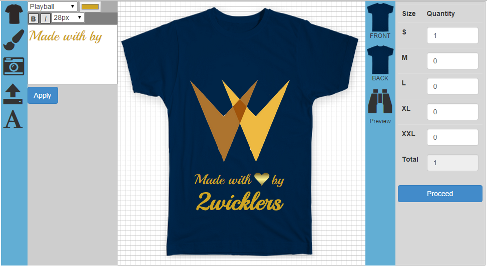

A Simple T-shirt Designing Web App to create custom tees.
It is an javascript based open source application for designing tee-shirts or hoodies.
Tee-Designer\tdesignAPI\images\Images\ directory, it will auto detect the images in that folder and show up on the running application after refreshing.index.php to some other name of your choice let's say mydesigner.php.mydesigner.php from any of your file(must be in the same directory as of mydesigner.php) using PHP or Javascript/Jquery or any other method of your choice.Help grow this plugin by your contribution, if you are a developer. https://github.com/2Wicklers/Tee-Designer